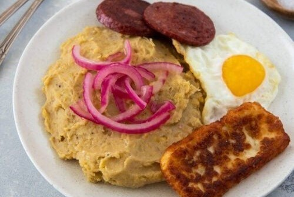
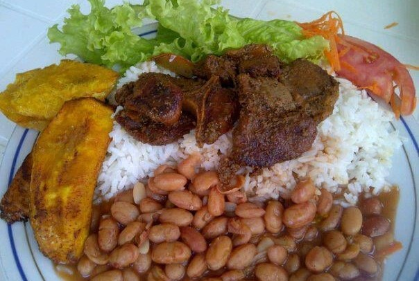

Mangú
A traditional Dominican breakfast made from mashed green plantains.
Mangú Recipe
Ingredients: Green plantains, water, salt, butter, red onions, vinegar.
Instructions: Boil plantains until tender, mash with butter and water, top with sautéed onions in vinegar.

Sancocho
A hearty stew made with various meats, tubers, and vegetables.
Sancocho Recipe
Ingredients: Beef, pork, chicken, yuca, plantains, corn, cilantro, garlic, onions, and more.
Instructions: Simmer meats and vegetables in a flavorful broth until tender.

Arroz Blanco con Habichuelas
A staple Dominican dish of white rice and beans.
Arroz Blanco con Habichuelas Recipe
Ingredients: White rice, red beans, garlic, onion, bell pepper, cilantro, tomato paste.
Instructions: Cook rice. Sauté garlic, onion, and bell pepper, then simmer beans with tomato paste and cilantro. Serve beans over rice.